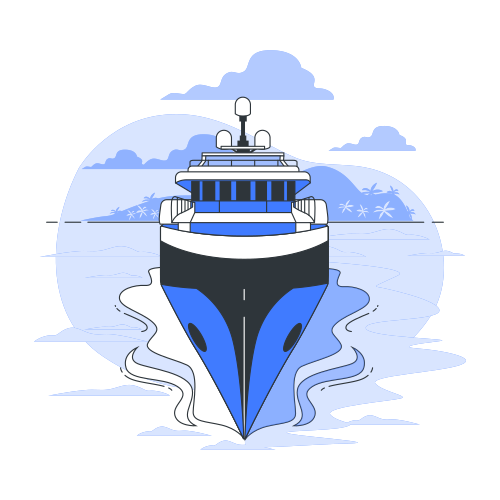

OVETHCOIN
EL FUTURO EN TUS MANOS
OvethCoin tiene como objetivo liderar la lucha por la sostenibilidad marina y la preservación de nuestros océanos al crear un sistema financiero sostenible y descentralizado que permite a los usuarios comprar OvethCoin directamente para apoyar proyectos sostenibles. Únete ahora para surfear la ola del futuro sostenible.
Featured in
¿QUE ES OVETHCOIN?
OvethCoin, una criptomoneda que impulsa la sostenibilidad marina y el reciclaje, recompensa la
participación en proyectos que promueven la limpieza de los mares y la reutilización de materiales.
Alentando la protección de los océanos, se financia la preservación de los ecosistemas marinos y la
investigación para mejorar la salud de los océanos.
Con OvethCoin, cada transacción se convierte en un paso hacia un futuro más limpio y sostenible,
impulsando la conciencia ecológica y apoyando la causa fundamental de preservar nuestro invaluable
entorno marino.

UTILIDAD
OvethCoin, más allá de ser una criptomoneda, es una herramienta para la
preservación de nuestros océanos.
Cada transacción con OvethCoin contribuye a financiar iniciativas ecológicas, como programas de
reciclaje, limpieza costera y proyectos de investigación marina.
Al utilizar OvethCoin, se crea un
sistema en el que cada interacción no solo beneficia al usuario, sino que también contribuye
directamente
a la salud y preservación de nuestros preciados océanos.
RAZONES DE COMPRA
-
Ayuda a preservar los océanos incentivando acciones sostenibles con OvethCoin.
-
Contribuye directamente a proyectos de limpieza marina y reciclaje al poseer OvethCoin.
-
Podría generar ganancias a medida que crece la conciencia y adopción de OvethCoin.
-
Playas limpias y saludables son atractivos turísticos fundamentales, impulsando la economía local.
-
Los océanos producen la mayoría del oxígeno que respiramos, mantener su salud es fundamental.
¿COMO FUNCIONA OVETHCOIN?
✲ Modelo de Negocio Cíclico
Oveth opera a través de un modelo de negocio cíclico diseñado para financiar proyectos de reciclaje marino y mantener la estabilidad de su criptomoneda. En la primera fase, se lleva a cabo una venta de tokens Oveth, lo que permite a los inversores adquirir Oveth a tasas exclusivas. Estos fondos se destinan a proyectos de reciclaje marino cuidadosamente seleccionados. Esta fase se repite regularmente, creando un ciclo continuo de inversión en la conservación marina.
✲ Regulación del Precio
Para garantizar la estabilidad económica de Oveth y su atractivo tanto para inversores a corto como a largo plazo, se implementa un mecanismo de regulación de precio mediante la quema de tokens. En momentos predefinidos, se quema una cantidad de Oveth de manera irreversible, retirándolos de la circulación. Este proceso se basa en una fórmula que tiene en cuenta la oferta y la demanda, lo que asegura transparencia y previsibilidad.
✲ Sostenibilidad y Beneficios
La combinación de estos dos componentes crea un ecosistema sostenible. El financiamiento de proyectos de reciclaje marino reduce la contaminación de nuestros océanos y promueve la conservación marina. La regulación del precio de Oveth garantiza que la criptomoneda sea atractiva tanto para inversores a corto como a largo plazo. Los inversores obtienen la oportunidad de participar en una inversión ética con el potencial de crecimiento a largo plazo, contribuyendo a un mundo más limpio y sostenible. Con Oveth, todos pueden ser parte de la solución para la conservación marina y la preservación de nuestros océanos.
VENTAJAS COMPETITIVAS
-
OvethCoin es la única criptomoneda centrada en la sostenibilidad marina y la lucha contra la contaminación marina.
-
La economía de OvethCoin esta basada en un sistema sostenible donde a largo plazo esta se vuelve escasa donde se presume valores altos en su evaluacion económica.
-
La participación activa de la comunidad no es necesaria, lo que permite a los usuarios apoyar proyectos directamente a través de la compra de OvethCoin.
-
Las alianzas estratégicas con organizaciones marítimas aumentan el impacto global de OvethCoin.
ROADMAP
TOKENOMICS
- Venta Inicial (ICO): 3,000,000 OvethCoin (60%)
- Reserva para Desarrollo del Ecosistema: 2,125,000 OvethCoin (42.5%)
- Reserva para Marketing: 1,750,000 OvethCoin (35%)
- Reserva para Recompensas a la Comunidad: 500,000 OvethCoin (10%)
- Fondos de Reserva: 225,000 OvethCoin (4.5%)
PREGUNTAS FRECUENTES
The answers to some of your most common questions are listed here. If you can’t find the info you’re looking for, let our moderators know in Telegram. You can also contact us at info@OvethCoin.com.
-
La misión de OvethCoin es impulsar la sostenibilidad marina y el reciclaje, incentivando la adopción de prácticas ecológicas y el apoyo a proyectos que protejan y restauren nuestros océanos.
-
OvethCoin se utiliza para financiar programas de reciclaje, limpieza costera, investigación marina y otras iniciativas que promuevan la salud y la preservación de los ecosistemas marinos.
-
Puedes contribuir uniéndote a proyectos de conservación marina respaldados por OvethCoin, promoviendo la conciencia sobre la sostenibilidad y participando activamente en la comunidad a través de foros, redes sociales y eventos relacionados.
-
El suministro total de OvethCoin y su inflación están controlados por un modelo económico que establece la emisión inicial, la tasa de emisión a lo largo del tiempo y posibles mecanismos de quemado para mantener la estabilidad económica y la escasez de la moneda.